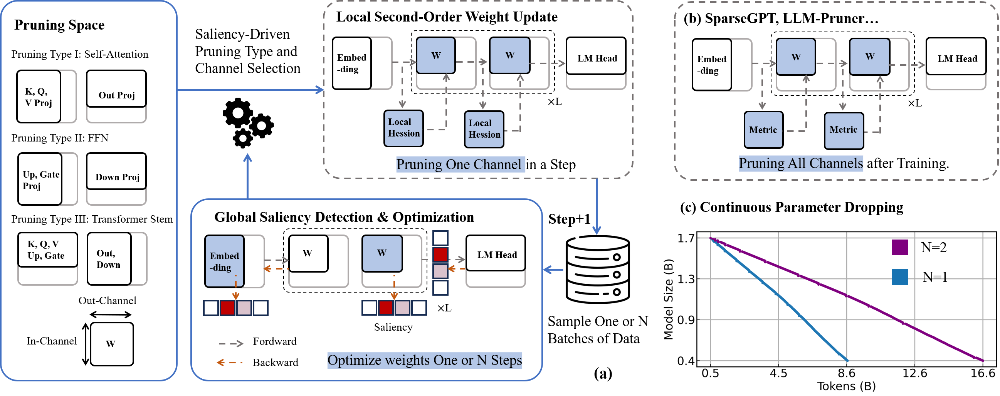
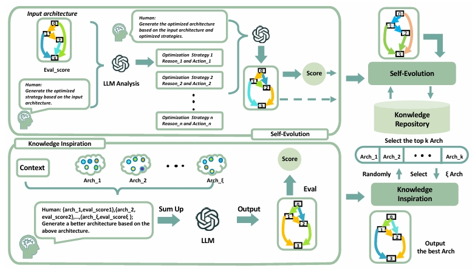
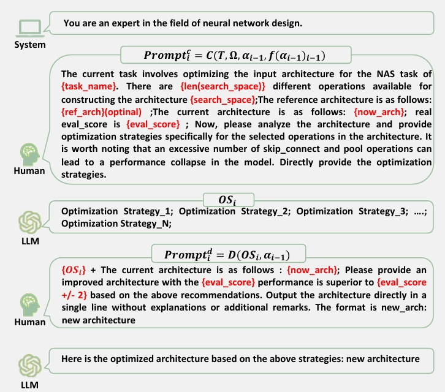

We propose a model that combines EfficientLLM with SEKI.
Fig.1 illustrates the overall workflow of EfficientLLM, a
pruning-aware pretraining framework designed for building
compact, high-performance language models suitable for edge
deployment.
The left section defines the pruning space, covering
multiple architectural components—including self-attention
(K, Q, V, output projections), feed-forward networks
(up/down projections), and Transformer stems—allowing
flexible and fine-grained structural pruning.
The central module performs global saliency detection, where
forward and backward passes are used to compute the
importance of each channel. Based on this saliency, the
framework dynamically selects less important channels to
prune, updating weights either once or over multiple steps.
The top-right section (a) shows a local second-order weight
update, leveraging local Hessian information to perform
pruning one channel at a time during training. This approach
ensures more stable performance compared to post-training
methods like SparseGPT or LLM-Pruner (shown in part b),
which prune all channels at once after training.
Finally, part (c) visualizes the concept of continuous
parameter dropping, showing how model size gradually
decreases as training progresses. Different pruning
frequencies (e.g., N=1 vs. N=2) allow control over
compression speed and stability.
EfficientLLM integrates pruning and training in a unified
loop, enabling structure-aware, saliency-driven compression
that is architecture-agnostic and efficient for real-world
deployment on resource-constrained devices.

Fig. 1 Scalable Pruning-Aware Pretraining for
Architecture-Agnostic Edge Language Models
SEKI is a novel large language model (LLM)-based neural
architecture search (NAS) method. Inspired by the
chain-of-thought (CoT) paradigm in modern LLMs, SEKI
operates in two key stages: self-evolution and knowledge
distillation. In the self-evolution stage, LLMs initially
lack sufficient reference examples, so we implement an
iterative refinement mechanism that enhances architectures
based on performance feedback. Over time, this process
accumulates a repository of high-performance architectures.
In the knowledge distillation stage, LLMs analyze common
patterns among these architectures to generate new,
optimized designs. Combining these two stages, SEKI greatly
leverages the capacity of LLMs on NAS and without requiring
any domain-specific data. Experimental results show that
SEKI achieves state-of-the-art (SOTA) performance across
various datasets and search spaces while requiring only 0.05
GPU-days, outperforming existing methods in both efficiency
and accuracy. Furthermore, SEKI demonstrates strong
generalization capabilities, achieving SOTA-competitive
results across multiple tasks.

Fig. 2 Framework of SEKI. SEKI is composed of two stages:
self-evolution and knowledge inspiration. In each iteration
of the self-evolution, the LLM generates optimization
strategies and produces a new, refined architecture by
analyzing the current architecture and its performance
metrics.

Fig. 3 PromptframeworkforSelf-Evolution.